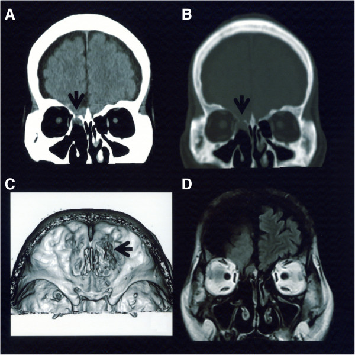
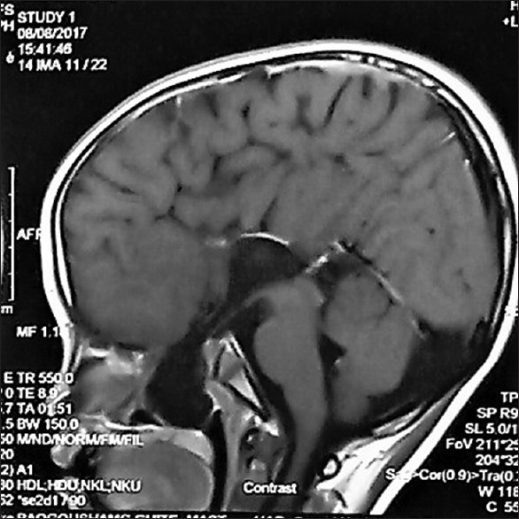
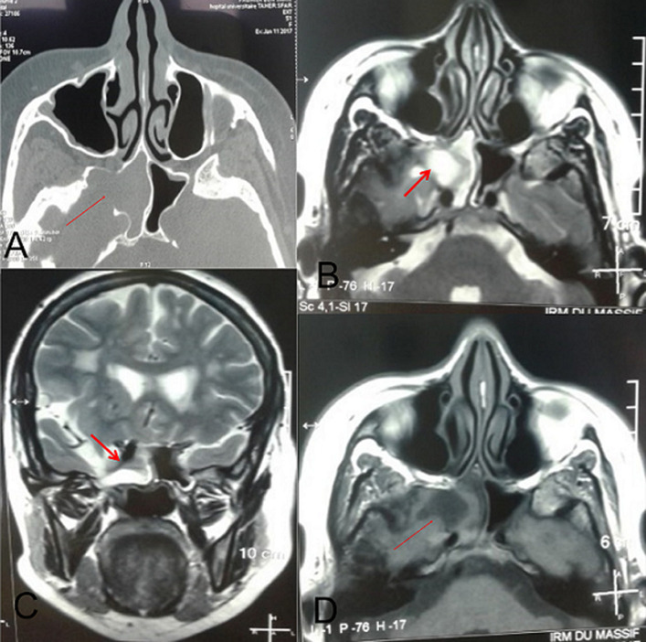

419 — Thoát vị não nền sọ ở trẻ (và thể ẩn ở người lớn) / Basal encephalocele in children (and the occult adult form)
Tags: pattern:khuyet-nen-so pattern:thoat-vi-nao pattern:khoi-duong-giua pattern:ro-dich-nao-tuy vung:mat vung:nen-so vung:tre-em vung:xoang vung:o-mat protocol:CT-lat-mong protocol:MRI-hoc-mat protocol:MRA protocol:noi-soi
Mức chắc chắn (certainty): tổng hợp y văn (literature synthesis) — 1 ca trẻ 10 tuổi thoát vị não qua xoang bướm kèm sứt môi–hở hàm ếch đường giữa (PMC6440357), 1 ca người lớn 66 tuổi thể qua xương sàng (PMC3917367), 1 ca người lớn thoát vị màng não–não xoang bướm (PMC7755373), và 2 tổng quan hệ thống 49 ca + 87 ca thể qua sàn yên (PMC12770197, PMC13066751). Số liệu lấy từ toàn văn/abstract có số; câu suy luận ghi [suy luận].
Vì sao bài này quan trọng: đây là khối "polyp" ở mũi/họng mà bên trong là NÃO — sinh thiết hay cắt bằng thìa là thủng màng não. Trẻ thường đến với sứt môi–hở hàm ếch đường giữa, chảy nước mũi trong, viêm màng não tái diễn, chậm phát triển hoặc thiếu hormone tuyến yên; người lớn đến với chảy dịch não tủy tự phát + viêm màng não lặp. Điểm chốt hình ảnh không phải "khối" mà là "khuyết xương + mô não/dịch não tủy liên tục với nội sọ".
1. Tổng quan bệnh học – cơ chế hình ảnh
- Định nghĩa: thoát vị não nền sọ (basal encephalocele, BE) = thoát vị màng não ± mô não ± dịch não tủy qua khuyết xương nền sọ trước (tấm sàng, xương sàng, thân xương bướm, sàn yên) vào hốc mũi, xoang bướm, vòm họng hoặc hốc mắt.
- Phân loại theo vị trí khuyết xương (dùng trong thực hành):
- Qua xương sàng (transethmoidal) — hay gặp ở người lớn thể ẩn, biểu hiện chảy dịch não tủy tự phát + viêm màng não tái diễn.
- Qua xoang bướm / qua sàn yên (transsphenoidal / trans-sellar) — hay ở trẻ, kèm dị tật đường giữa mặt và rối loạn trục dưới đồi–yên.
- Qua khe ổ mắt–bướm (spheno-orbital) — lồi mắt, lồi mắt đập theo mạch, giảm thị lực.
- Qua vòm họng (nasopharyngeal) — khối trong vòm, tắc đường thở khi bú/ngủ.
- TẠI SAO xảy ra (mô bệnh học): thuyết được chấp nhận rộng nhất là "neuroschisis" sau khi ống thần kinh đóng — một khiếm khuyết trung mô nền sọ tại điểm đóng cuối cùng của ống thần kinh để lại khuyết xương + khiếm khuyết màng não, mô não bị đẩy ra theo nhịp mạch–hô hấp. Vì cùng một "cửa sổ" phôi thai nằm ở đường giữa mặt, BE gần như luôn đi kèm dị tật đường giữa: sứt môi/hở hàm ếch (Tessier 0), hypertelorism, rãnh mũi rộng, thiểu sản thị thần kinh / hội chứng Morning Glory (bài 417), bất sản thể chai.
- TẠI SAO thấy trên CT (vật lý): xương nền sọ dày 0,5–2 mm, nên cửa sổ xương (bone window) với lát 0,6–1 mm mới thấy khuyết xương + bờ xương cứng; mô não thoát vị đồng đậm độ với nhu mô não (30–40 HU), khác polyp/dịch nhầy (5–25 HU). Cửa sổ mô mềm cho thấy khối đồng đậm độ não, không vôi hóa, không phá hủy xương kiểu ác tính — bờ khuyết nhẵn, cứng.
- TẠI SAO thấy trên MRI (vật lý): dịch não tủy (nước tự do) T1 tối, T2 rất sáng, FLAIR tối; mô não T1 xám, T2 xám sáng, FLAIR xám và theo tín hiệu vỏ não. Dấu chốt là "dải dịch não tủy" (CSF cleft) chạy liên tục từ bể nền qua khuyết xương vào khối — chỉ cần một lát cắt vuông góc qua khuyết xương là thấy. DWI: mô não không hạn chế khuếch tán (khác áp-xe); T1 sau tiêm: mô não không ngấm thuốc (khác u), chỉ màng não ngấm nhẹ.
- Số liệu định lượng cốt lõi:
- Tần suất BE: 1/35.000–40.000 trẻ sinh sống (PMC3917367).
- Thể qua xoang bướm (TSE): < 5% tổng số BE, ước tính 1/700.000 trẻ sinh sống (PMC6440357, dẫn Sanjari 2013).
- Thể qua sàn yên — 49 ca có triệu chứng được mổ (25 năm): tắc mũi 59,2%, rối loạn nội tiết 46,9%, rò dịch não tủy 30,6%, giảm thị lực 24,5%; 69,4% được chẩn đoán ≤ 6 tuổi; đường mổ qua mũi 49,4%; 81,8% hết/cải thiện triệu chứng (PMC12770197).
- Rối loạn tuyến yên (87 ca, tổng quan 2): 47,1% có suy chức năng tuyến yên; trong 33 ca có đánh giá trước–sau mổ: 48,5% xấu đi, 18,2% cải thiện, 33,3% không đổi — nghĩa là mổ có thể làm NẶNG thêm nội tiết (PMC13066751).
- Ca trẻ 10 tuổi (PMC6440357): sứt môi–hở hàm ếch Tessier 0, khối đập theo mạch, mềm, màu niêm mạc bình thường nhô ra từ vòm mũi qua khe hở khẩu cái; MRI: bất sản thể chai, colpocephaly, mất vách trong suốt, não thất ba cao và giãn, thoát vị qua xương bướm. Xử trí: vá khẩu cái, để nguyên thoát vị, mổ nội soi ở thập niên thứ hai.
- Ca người lớn 66 tuổi (PMC3917367): chảy nước mũi trong dai dẳng + viêm màng não tái diễn; chỉ số góc mắt (canthal index) 38,5 = hypertelorism; lác mắt phải từ nhỏ; CT thấy mô não chui qua xương sàng phải; xử trí mở sọ trán–thái dương vá màng não bằng cân thái dương.
2. Mẫu hình + chẩn đoán phân biệt theo vị trí (gamut)
Câu hỏi 1 — khối nằm ở đâu?
- Trong hốc mũi (một bên, trên, sát trần): thoát vị não, glioma mũi (nasal glioma), dermoid, polyp mũi–xoang, thoát vị màng não (meningocele).
- Trong xoang bướm: thoát vị qua sàn yên, màng não–não xoang bướm, nang giữ niêm (mucocele), u tuyến yên, nấm xoang.
- Trong vòm họng: thoát vị qua vòm (nasopharyngeal), u nang ống giáp–lưỡi lạc chỗ, u mô thừa (teratoma), u nguyên bào cơ vân.
- Trong hốc mắt: thoát vị qua khe ổ mắt–bướm, màng não–não hốc mắt, u màng não dây thị, giãn tĩnh mạch hốc mắt.
Câu hỏi 2 — có "cửa" thông với nội sọ không?
- Có khuyết xương + dải dịch não tủy/mô não liên tục → thoát vị não (chẩn đoán xác định).
- Không có khuyết xương, khối nằm ngoài và không liên tục → glioma mũi/dermoid/polyp (glioma = mô thần kinh lạc chỗ, không thông với nội sọ).
Câu hỏi 3 — có dị tật đường giữa đi kèm không?
- Sứt môi/hở hàm ếch, hypertelorism, rãnh mũi rộng, bất sản thể chai, thiểu sản thị thần kinh → ủng hộ mạnh BE bẩm sinh, và phải tầm soát nội tiết trước khi can thiệp.
Gamut theo tuổi (rất thực dụng):
- Trẻ < 6 tuổi: dị tật đường giữa + tắc mũi/hở hàm ếch + rối loạn nội tiết → BE thể bướm/sàn yên (69,4% chẩn đoán ≤ 6 tuổi).
- Người lớn: chảy dịch não tủy tự phát + viêm màng não tái diễn, đôi khi chỉ có hypertelorism/lác nhẹ — thể ẩn qua xương sàng/bướm.
3. Bảng so sánh phân biệt (ma trận đối chiếu)
| Thực thể (entity) | Hình ảnh điển hình (CT / MRI) | Chốt vào (rule-in) | Chốt loại (rule-out) | Gợi ý xác nhận |
|---|---|---|---|---|
| Thoát vị não nền sọ (BE) | Khuyết xương nền sọ bờ nhẵn, cứng; khối đồng đậm độ mô não (30–40 HU); MRI: dải dịch não tủy liên tục + mô não theo tín hiệu vỏ, không ngấm thuốc | Khuyết xương + liên tục mô não/dịch não tủy với nội sọ | Không khuyết xương → loại; khối đặc ngấm thuốc, phá xương → u | CT lát mỏng 0,6–1 mm + MRI T2/FLAIR + T1 sau tiêm |
| Glioma mũi (nasal glioma) | Khối đặc, đồng tín hiệu não, KHÔNG có cuống xuyên xương, có thể dính da sống mũi | Mô não lạc chỗ nhưng không thông nội sọ | Có khuyết xương/cuống qua tấm sàng → BE | MRI; không sinh thiết mù trước khi loại BE |
| Dermoid mũi | Khối chứa mỡ (−40 đến −120 HU), có thể vôi hóa, hốc mũi rộng, dò ra da | Mỡ + vôi hóa + đường dò da | Mô não/CSF → BE | CT (mỡ/HU) + MRI fat-sat |
| Polyp mũi–xoang / mucocele | Opacify xoang, dịch nhầy 5–25 HU, vỏ xoang mỏng ra nhưng còn liên tục, không có mô não | Dịch nhầy, không có thành phần nội sọ | Có mô não/CSF lọt vào → BE | MRI T2 (nhầy sáng, não xám) + CT xương |
| Ung thư xoang (SCC, u tuyến) | Phá xương bờ nham nhở, khối ngấm thuốc mạnh, hoại tử | Phá hủy xương ác tính + xâm lấn | Bờ xương nhẵn, không phá hủy → lành/BE | CT + MRI + sinh thiết sau khi loại BE |
| U màng não dây thị | Bọc dây thị ("tram-track"), ngấm thuốc mạnh, có thể vôi hóa | Dấu tram-track + ngấm thuốc dọc dây thị | Không có khuyết xương nền sọ → loại BE | MRI hốc mắt + CT |

(A) CT trục/coronal cửa sổ mô mềm: khối đồng đậm độ mô não chui qua xương sàng phải (mũi tên). (B) Cửa sổ xương: khuyết xương bờ nhẵn (mũi tên). (C) MRI T1 sau tiêm: mô não thoát vị không ngấm thuốc, phân biệt với u. (D) MRI T2: mô não theo tín hiệu vỏ não. Nguồn: Harada N và cs, J Med Case Rep 2014 (PMC3917367) Fig. 1, CC BY 4.0.4. Protocol chụp + hệ phân độ/điểm chuẩn hóa
Bước 1 — CT nền sọ lát mỏng (bắt buộc):
- Lát 0,6–1 mm, cửa sổ xương + cửa sổ mô mềm, tái tạo đa bình diện (coronal + sagittal) theo trục khuyết xương; ghi vị trí, kích thước khuyết (mm), bờ xương, thành phần khối (HU).
Bước 2 — MRI nền sọ + hốc mắt:
- T2 FSE/FLAIR (dịch não tủy vs mô não), T1 không tiêm + sau tiêm, DWI (loại áp-xe/u tế bào cao), MRA/CTA khi thể qua khe ổ mắt–bướm hoặc khối đập theo mạch. Ghi rõ thành phần thoát vị: màng não đơn thuần (meningocele) / màng não + mô não (meningoencephalocele) / có tuyến yên–trục dưới đồi / có mạch máu lớn.
Bước 3 — đánh giá chức năng (không phải hình ảnh nhưng quyết định):
- Nội tiết: GH, IGF-1, cortisol 8h, FT4/TSH, prolactin, ADH (natri/máu, áp lực thẩm thấu niệu) — vì 47,1% có suy tuyến yên và 48,5% xấu đi sau mổ (PMC13066751).
- Mắt: thị lực, thị trường, đáy mắt tìm Morning Glory/thiểu sản thị, khúc xạ.
- Tai mũi họng: nội soi tìm cuống, nghiệm pháp Valsalva (không làm khi nghi thoát vị lớn), xét nghiệm beta-2 transferrin dịch mũi nếu rò.
Bước 4 — chỉ định và đường mổ (thuật toán):
flowchart TD
A[Khối đường giữa mũi/vòm/xoang ở trẻ] --> B{CT lát mỏng: có khuyết xương nền sọ?}
B -->|Không| C[Polyp/dermoid/glioma: xử trí theo bản chất, sinh thiết được]
B -->|Có| D[MRI xác nhận thành phần: màng não / mô não / mạch máu]
D --> E[Tầm soát nội tiết + mắt + thính lực]
E --> F{Có chỉ định mổ?}
F -->|Tắc đường thở, rò dịch não tủy, viêm màng não tái diễn, mất thị lực tiến triển| G[Mổ nội soi qua mũi, vá màng não, trả mô não về trong]
F -->|Không| H[Theo dõi: tránh ngoáy mũi, tránh hút mũi, tránh chơi thể thao va chạm]
G --> I[Theo dõi nội tiết sau mổ: 48,5% xấu đi, 18,2% cải thiện]
- Đường mổ: nội soi qua mũi (transnasal endoscopic) được ưu tiên (49,4% ca trong loạt 49 ca; 81,8% hết/cải thiện) vì đường mở sọ có tỷ lệ rối loạn trục dưới đồi–yên sau mổ cao (PMC6440357 dẫn lại; PMC12770197). Với trẻ có hở hàm ếch, có thể đi qua khe hở khẩu cái hoặc hoãn vá khẩu cái tới khi sửa thoát vị.
- Nguyên tắc vàng: không sinh thiết/cắt khối đập theo mạch, mềm, màu niêm mạc bình thường khi chưa có CT nền sọ lát mỏng — nguy cơ thủng màng não, rò dịch não tủy, viêm màng não.
5. Biến thể bình thường và cạm bẫy
- Biến thể bình thường dễ nhầm: xoang bướm có vách ngăn lệch, khuyết mỏng bẩm sinh ở sàn yên (dehiscence) có thể thấy trên CT mà không có thoát vị — chỉ gọi thoát vị khi MRI có mô não/dịch não tủy đi qua.
- Cạm bẫy 1 — "polyp mũi" ở trẻ có hở hàm ếch: đây là khối thoát vị, không phải polyp; sinh thiết = rách màng não. Ca 10 tuổi (PMC6440357) được phát hiện tình cờ trong mổ vá khẩu cái.
- Cạm bẫy 2 — chỉ đọc cửa sổ xương: khuyết xương rất nhỏ (1–3 mm) có thể bỏ sót trên lát 5 mm; luôn lát ≤ 1 mm + tái tạo coronal.
- Cạm bẫy 3 — nhầm với u vì "khối ngấm thuốc": mô não thoát vị không ngấm thuốc, nhưng màng não và tĩnh mạch quanh khối ngấm → đừng kết luận u. DWI giúp loại áp-xe.
- Cạm bẫy 4 — bỏ sót dị tật đi kèm: hypertelorism đo bằng chỉ số góc mắt (canthal index) — ca 66 tuổi có 38,5; lác, thiểu sản thị, bất sản thể chai đều là "chìa khóa" gợi bẩm sinh.
- Cạm bẫy 5 — bỏ sót nội tiết: 47,1% có suy tuyến yên, nhưng chỉ 28,7% được đánh giá hormone đầy đủ (PMC13066751) — không đo hormone = bỏ sót.
- Cạm bẫy 6 — "mổ xong là hết": 48,5% bệnh nhân xấu đi về nội tiết sau mổ; cần theo dõi hormone định kỳ, không hứa "mổ là khỏi".
- Cạm bẫy 7 — hút mũi/đặt ống thông mũi ở trẻ có khối: có thể làm rách túi thoát vị → rò dịch não tủy; dặn gia đình không ngoáy/hút mũi, tránh thể thao va chạm.
6. Tự lượng giá — Blind Quiz ngay trên trang tĩnh
Ca 1 — bé trai 10 tuổi, sứt môi–hở hàm ếch đường giữa, khối đập theo mạch trong vòm miệng. Nhìn ảnh trước khi mở đáp án.

- Gợi ý lâm sàng: sứt môi–hở hàm ếch Tessier 0 đã vá lúc 6 tháng; nay khó thở nhẹ, nói khó; khám thấy khối mềm, màu niêm mạc, đập theo mạch nhô qua khe hở khẩu cái.
- Câu hỏi: (1) Khối này là gì và vì sao tuyệt đối không sinh thiết? (2) Dấu hiệu MRI nào chứng minh khối thông với nội sọ? (3) Ba dị tật não đi kèm trong ca này?
Bấm để hiện đáp án (findings + chẩn đoán)
- Dấu hiệu (findings): MRI T1 sau tiêm lát sagittal — mô não và màng não đi qua khuyết xương bướm xuống vòm họng, không ngấm thuốc; kèm bất sản thể chai, colpocephaly, mất vách trong suốt, não thất ba cao.
- Chẩn đoán (diagnosis): thoát vị não qua xương bướm (transsphenoidal encephalocele) trên nền dị tật đường giữa. Sinh thiết/cắt = thủng màng não, rò dịch não tủy, viêm màng não.
- Nguồn ảnh: Dutta I, Sharma GN, Singh KP. Indian J Plast Surg 2018 (PMC6440357) Fig. 2, CC BY-NC-SA 4.0.
Ca 2 — nam 66 tuổi, chảy nước mũi trong dai dẳng và viêm màng não tái diễn. Tìm "cửa" thoát vị.
- Gợi ý lâm sàng: không tiền sử chấn thương, không mổ; lác mắt phải từ nhỏ, khoảng cách hai mắt rộng.
- Câu hỏi: (1) Khuyết xương ở đâu, bờ xương ra sao? (2) Khối đồng đậm độ gì trên CT và tín hiệu gì trên MRI? (3) Vì sao nghĩ bẩm sinh dù bệnh nhân 66 tuổi?
Bấm để hiện đáp án (findings + chẩn đoán)
- Dấu hiệu (findings): khuyết xương sàng phải bờ nhẵn; khối đồng đậm độ mô não (30–40 HU) chui qua; MRI T1 sau tiêm không ngấm thuốc, T2 theo tín hiệu vỏ não; chỉ số góc mắt 38,5 = hypertelorism.
- Chẩn đoán (diagnosis): thoát vị não nền sọ thể qua xương sàng (transethmoidal basal encephalocele) — thể ẩn ở người lớn, biểu hiện bằng rò dịch não tủy + viêm màng não lặp; lác + hypertelorism là dấu vết bẩm sinh.
- Nguồn ảnh: Harada N và cs, J Med Case Rep 2014 (PMC3917367) Fig. 1, CC BY 4.0.
Ca 3 — người lớn, CT thấy xoang bướm phải mờ + tiêu bờ xương bên. Chẩn đoán nào bị bỏ sót?

- Gợi ý lâm sàng: đau đầu, chảy mũi, không sốt; xoang bướm phải mờ hoàn toàn.
- Câu hỏi: (1) "Tiêu xương" ở đây là phá hủy ác tính hay khuyết bẩm sinh? (2) MRI thấy gì trong xoang? (3) Vì sao không được nạo/sinh thiết xoang trước khi loại trừ thoát vị?
Bấm để hiện đáp án (findings + chẩn đoán)
- Dấu hiệu (findings): CT trục — mờ xoang bướm phải + khuyết bờ xương bên; MRI — mô não/màng não đi vào xoang, tín hiệu giống mô não, không phải dịch nhầy thuần.
- Chẩn đoán (diagnosis): thoát vị màng não–não xoang bướm (sphenoid meningoencephalocele); bờ xương nhẵn = lành/bẩm sinh, không phải ung thư.
- Nguồn ảnh: Hasnaoui M, Guizani R. Pan Afr Med J 2020 (PMC7755373) Fig. 1, CC BY 4.0.
Bài liên quan chéo
- 417 – Hội chứng Morning Glory: hõm đĩa thị và bất thường nền sọ đường giữa
- 432 – Vùng yên (sellar region)
- 3051 – Máu tụ tổ chức hóa xoang bướm
Ảnh
419_thoat-vi-nao-nen-so_MRI_PMC6440357-F2.jpg— MRI trẻ 10 tuổi, CC BY-NC-SA 4.0.419_thoat-vi-nao-nen-so_CT-MRI_PMC3917367-F1.jpg— CT + MRI người lớn, CC BY 4.0.419_thoat-vi-nao-nen-so_CT-MRI_PMC7755373-F1.jpg— CT + MRI xoang bướm, CC BY 4.0.- Chi tiết nguồn/giấy phép:
images/CREDITS.md; link gốc:sources.md.
Không dùng để chẩn đoán độc lập khi chưa có người hướng dẫn.